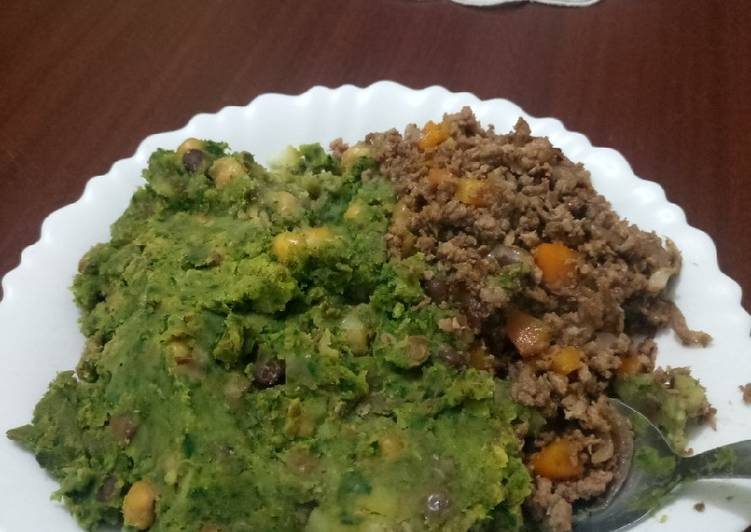
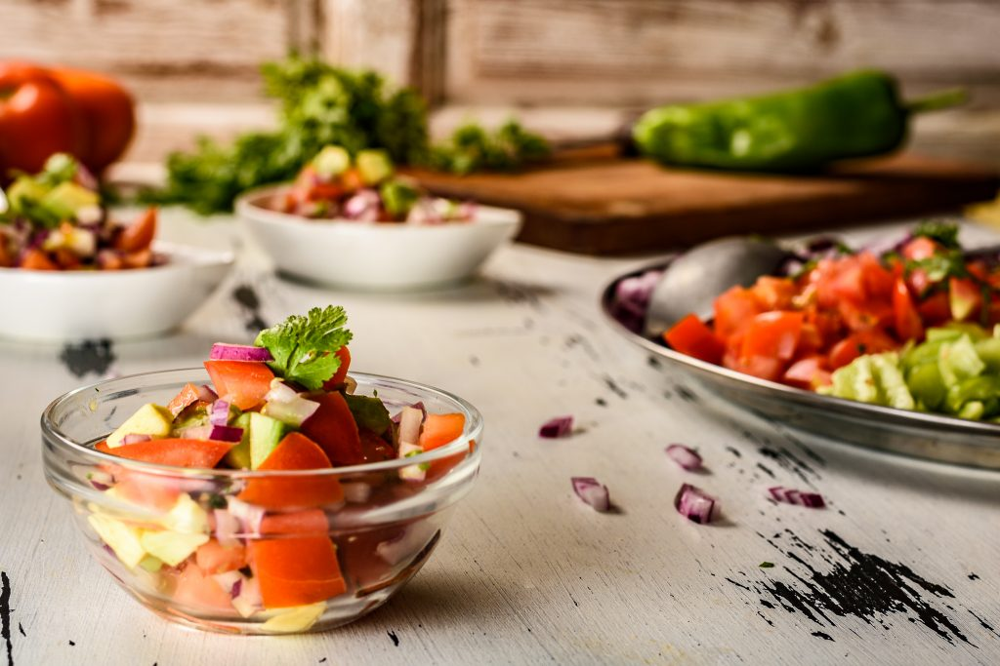

As convenient as a store-bought mix can be, every home cook needs a good buttermilk pancake recipe in their repertoire..Continue reading
Mukimo is a meal whose origin is Central Kenya, it's diverse in the country also and famous. It’ being served in hotels across..Continue reading
Do you love trying new things? How about delicious and fresh salads? If so, then you will love Kachumbari! This East..Continue reading